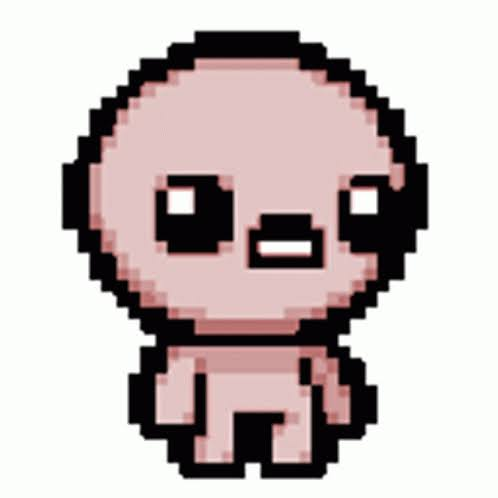

Tudo sobre TBOI
é um RPG de ação estilo roguelike com mapas gerados aleatoriamente. No jogo, você acompanha a jornada de Isaac, um garoto que foge para o porão de sua casa após sua mãe receber uma suposta mensagem divina exigindo seu sacrifício. Enfrente monstros grotescos, colete mais de centenas de itens bizarros que mudam completamente sua aparência e habilidades, e descubra os segredos sombrios escondidos em cada andar.